Field of Study
Hello, Everybody.
I am a senior here at the University of Pittsburgh. Hopefully, this is my final semester of undergrad studying Communication, Public & Professional Writing, and Marketing, but alas, school is only a side gig for me. I work full-time as Lead Member Service Representitive as well as the Marketing and Member Communications Coordinator at a Federal Credit Union, stepping in as a lending officer when market demand necessitates it. Essentially, I am responsible for overseeing the main branches' tellers and member service reps' operations as well as designing, proofing, and coordinating the distribution of all credit union publications, advertisements, and notifications...
... not to forget the financing of personal and automobile loans from initial inquiry to closing and disbursing funds (when market demand necessitates it, of course).
Evening and online classes are helping me maintain a full-time bank hour workweek while I get my degree so I can finally put my money where my mouth is and back up what I am already doing with a piece of paper that tells others I can do what I've been doing for over a year now. *sighs*. Even so, it's taken a while, but at the end of it all, I sincerely enjoy the critical thinking and intellectual engagement that 'trying' in school can provide. It makes me want to get an MBA so I can put even more money where my mouth is in future career prospects.
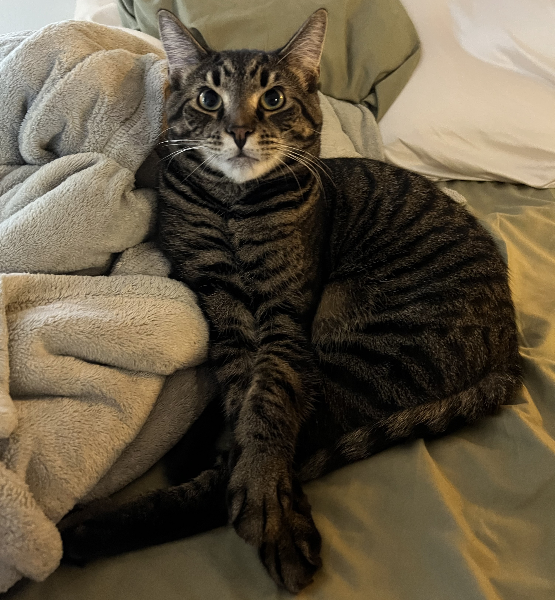

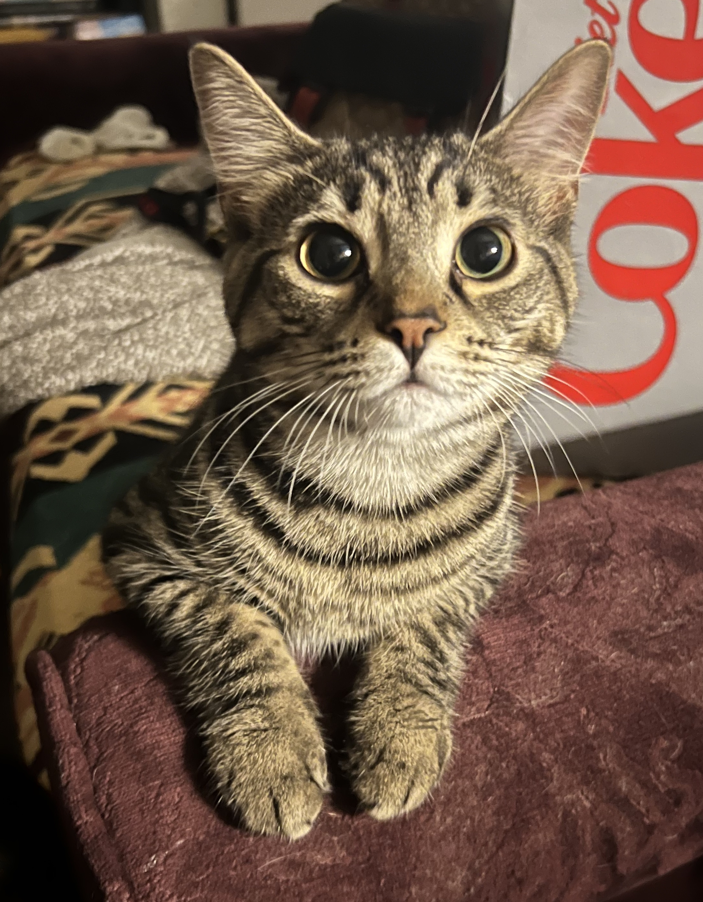

My cats; the purrfect Frenchie, Frankie, and Ferguson.
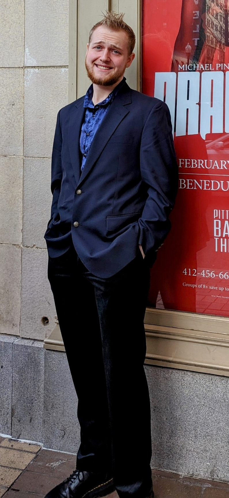
Knowledge, Tools, and Skills
It has taken many experiences to gain the skills in my tool belt today. As tedious as the misadventures of growing up can be, most, if not everything our parents say and teach us is true, and we do not, in fact, know better or more than they do. I hope we are all mature enough to have realized this to some qualified degree. It has taken time, space, and mistakes to understand and appreciate. It wasn't until I was living on my own supporting myself, working full-time up the ladder, and attaining a degree that I finally understood and appreciated all that my parents instilled in me as values, standards, and expectations; all of which prove to be higher than the majority of rest of the world.
Back in high school, I was a well-rounded student but focused my efforts as an art and design student, taking Studio and Digital classes. I got perfect scores on my AP Art exams but continued to place second in painting for three years running in a German Arts Festival.* I spent a year during high school studying abroad in Cologne, Germany, eating Spatzle, wearing Birkenstocks, und spreche Deutsch.
*yea... Imagine how 'unhappy' I was by the final go-around my senior year.
Travels abroad to Germany
I've had a job since I could legally have a job. At one point, I found myself managing the Dunkin' on Forbes Avenue while enrolled in classes, their second most profitable location in the entire state. Needless to say, retail fast food almost got the better of me, as such systems are designed to do. For an idea of what I mean, in August of 2022, I worked 317 hours for 28 out of the 31 days of the month (almost 12 hours a day). I broke my foot in October, took the semester off, quit Dunkin', and started entry-level at the credit union—ever since then, I've just been doing what needs to be done, succeeding, and perfecting my craft.
I would say that I'm a pretty great writer, both creatively and professionally. I write over fifty emails a day for work in a customer service supervisory role, and with the amount of—If you have any additional questions or concerns, please do not hesitate to reach out; we are here and happy to assist you further's—I write, you'd think it'd be written as my epitaph(on my tombstone) someday. But even with all the South Oakland parties and an endless year of European discos, I still haven't found a feeling that compares to the one I get when I create a product—whatever it may be—and I am proud and excited about it.
Recently, I have been wading into Adobe's ominous waters and producing AV productions, even buying myself a $700 switchboard with a part of my Christmas bonus—a casualty to my head-first approach to most creative endeavors that excite me because god knows excitement is hard to come by being an adult. While I cannot nearly call myself an expert or even adept, I can say that given the time, I can always figure it out—somehow. Podcasts and 10 to 20-minute videos have been the majority of my projects, but I have a long and practiced history with digital art programs like Procreate and Photoshop.
I've had a RedBubble shop since 2019 and have posted my designs throughout the years as a place to have them publicly copy-protected and make a little money off of their enjoyment. Notably, last year, I received a cease and desist from the Keith Harring Foundation for alleged intellectual property right infringement; I think the mark of a truly successful artist is adversity (a.k.a. a parody speech lawsuit I didn't have the time, bandwidth, or legal power to engage in). In the five years I have had the shop up, I have made enough to need an accountant at 22, giving myself supplemental income that has helped pay for college and my materialistic appreciations and enthusiasms. I'll always pay the dinner bill when the waiter drops it off at the table; I guess I'm just that kinda guy.
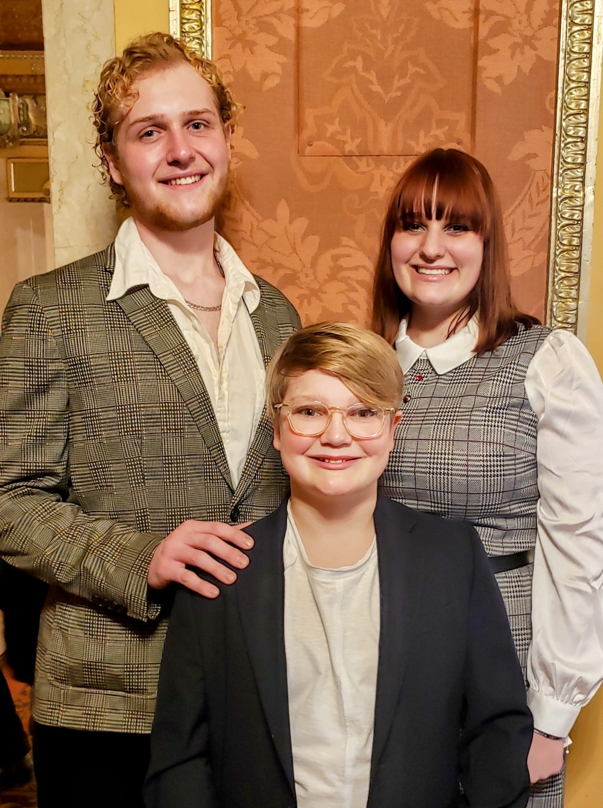

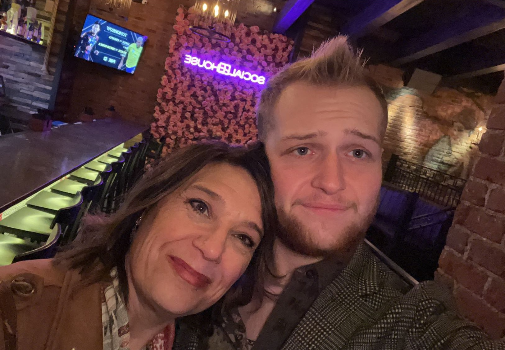
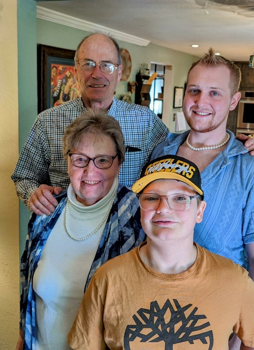
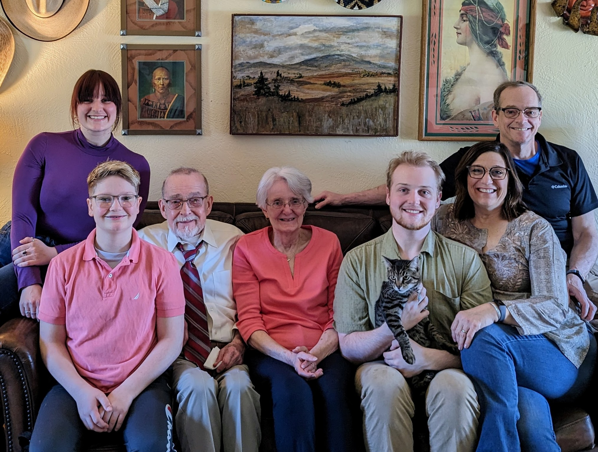
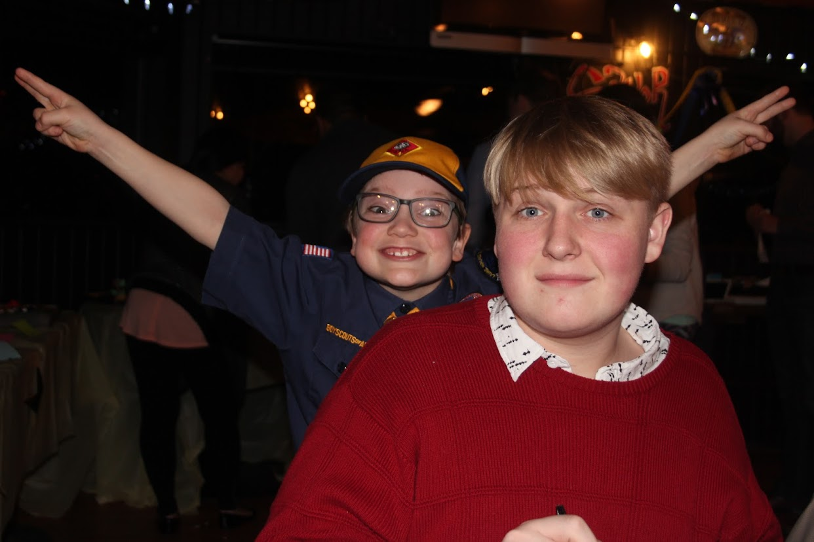

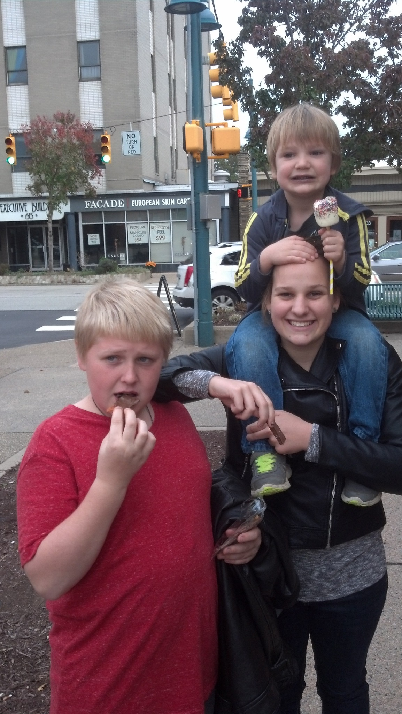
Familial context.
What is good design?
I hope I am not the first place this comes up, and know it's all been said at least once... somewhere... before—I believe that you can't teach taste. You either got it, or you don't. I find truer words have never been put into existence other than maybe, "Baby, you're a Firework." This is not in a pretentious or dismissive sense by any means—taste is more a feeling, an instinctual understanding of what works. Principals of design, history of culture, and contextual experiences can all aid in understanding, being gathered, and learned—yes. Still, they can't spark that feeling or feed this instinct that can manifest as simple goosebumps yet mean so much more in different contexts and appreciations. It's all about the 'vibes'; seeing through something for merely what you see, appreciating and understanding it for its unseen intention and hidden messages.
The biggest tool to serve me significant advantages in my endeavors is critical thinking and engagement with present context(s), practicing an ever-present sense of respectful professionalism to others. Maybe it's the way I was raised, and the older I get, the more thankful I am for my parents holding my older sister and me to adult standards and expectations. I was never baby-talked and always allowed to explore the world independently with clear boundaries and rules. From my professional experience at this point, and maybe this is just a complaint from management, but nobody seems to want to work. I could b!tch and moan, but simply, I think this generation's work ethic and workforce expectations are skewed. Nothing is handed to you. I worked long and hard, beating many other older and more 'qualified' candidates for my position. I simply proved I could, and continue to do, the best job they ask for—and then some. The extra mile buys you a seat at the table; 'Yes' is more powerful than 'No.'
*he dismounts the highest of horses*
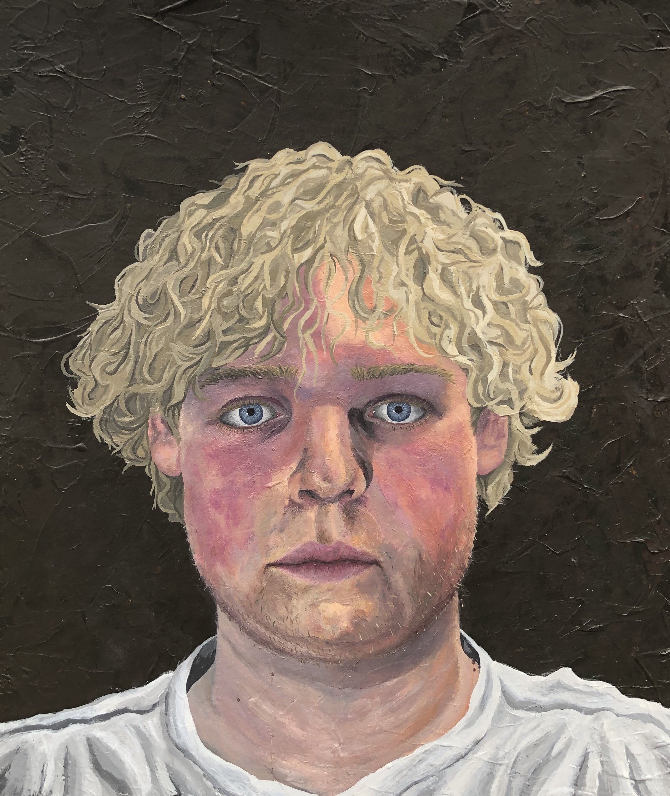
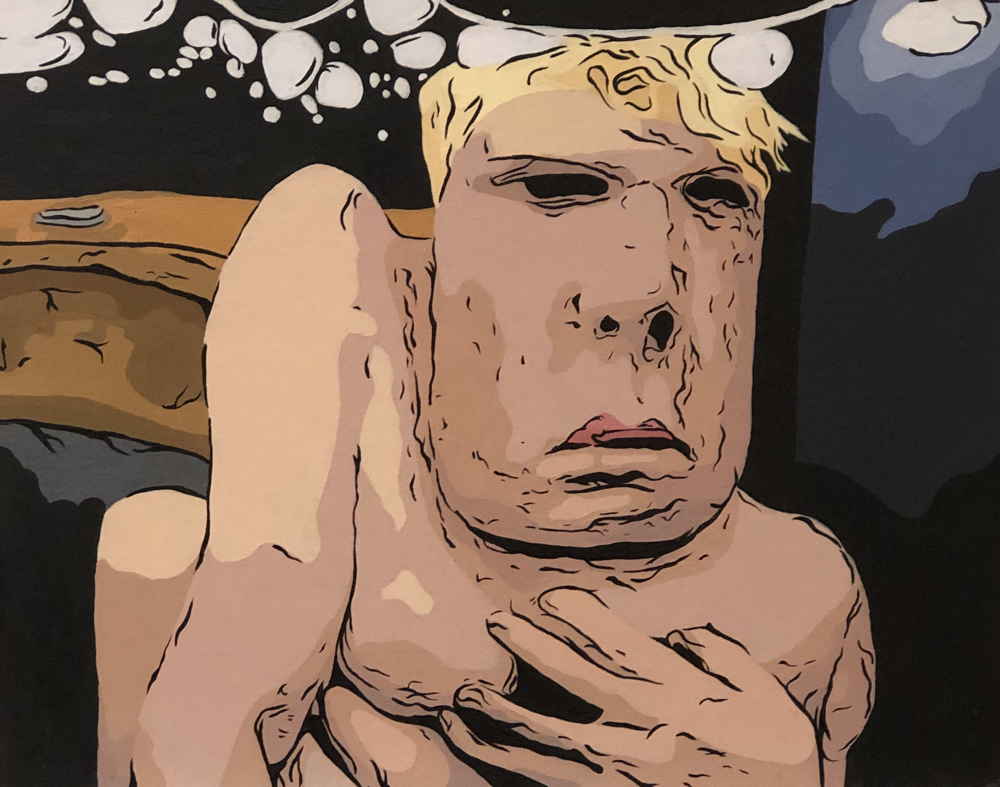
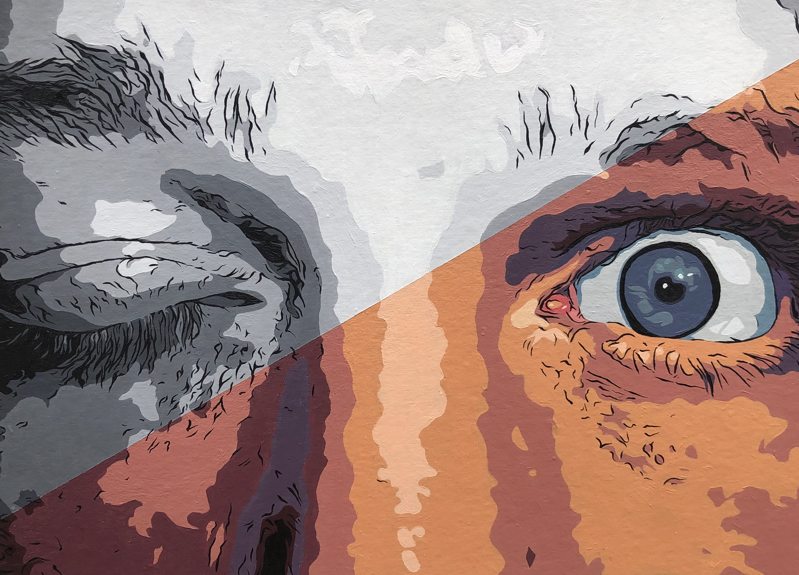

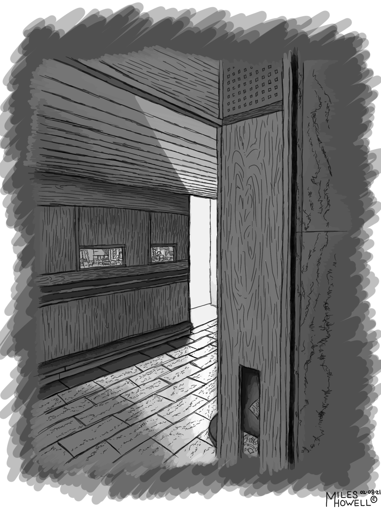
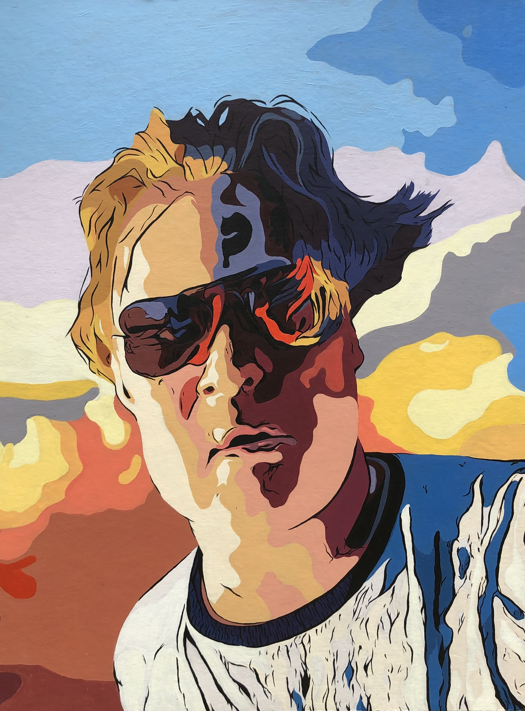
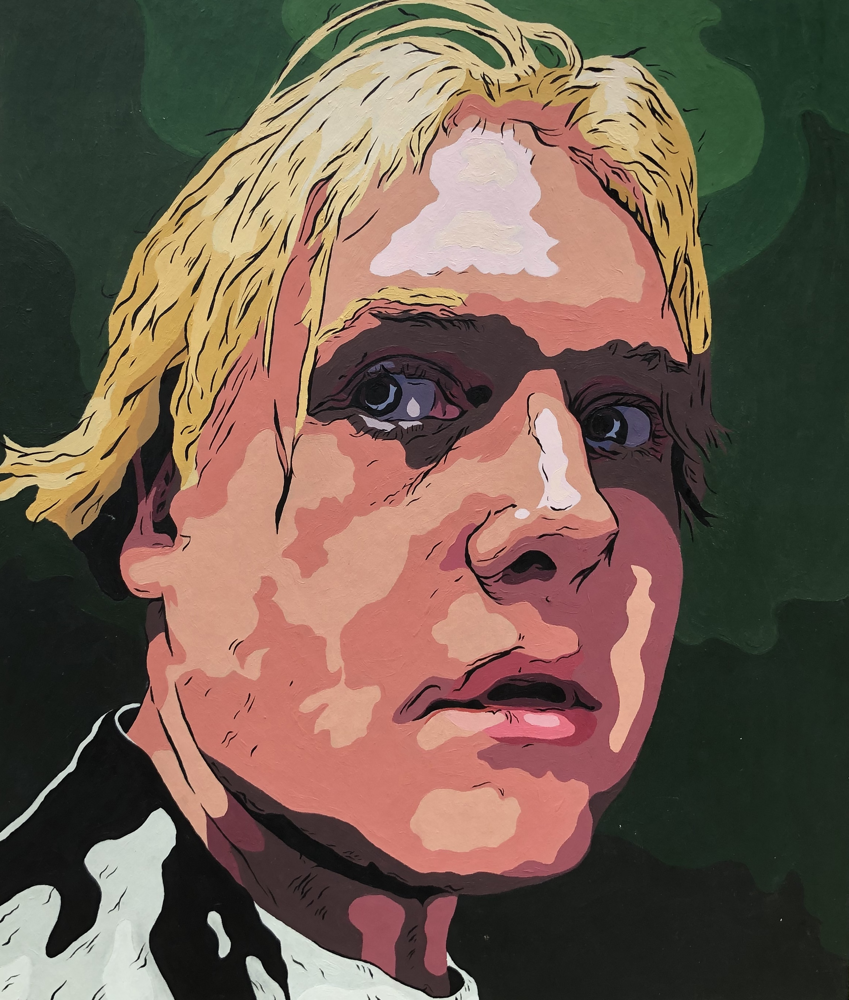
A quick snapshot of my paintings from back in the day.
In the Future
Looking ahead—I think I want to finish out this chapter of undergraduate studies and maintain my position at the credit union, possibly convincing them to pay for the MBA that I want to get soon now that I have grown up and somehow enjoy learning, engaging, and making myself think. I want to finance my own new Ford Bronco for myself for a change. I've been living in Shadyside for almost three years now; I moved out of my parent's house at 18 and have not lived with them since, but with graduation approaching—and a good chunk of life experience gained(not nearly as much as I plan to acquire, don't you worry)—I think I might look to save some money and live with them and my 14-year-old brother, pay off student loans in a few years, get that MBA, and see which company will offer me the most money to manage a creative department or be their creative director.
Updates to come possibly, who knows...
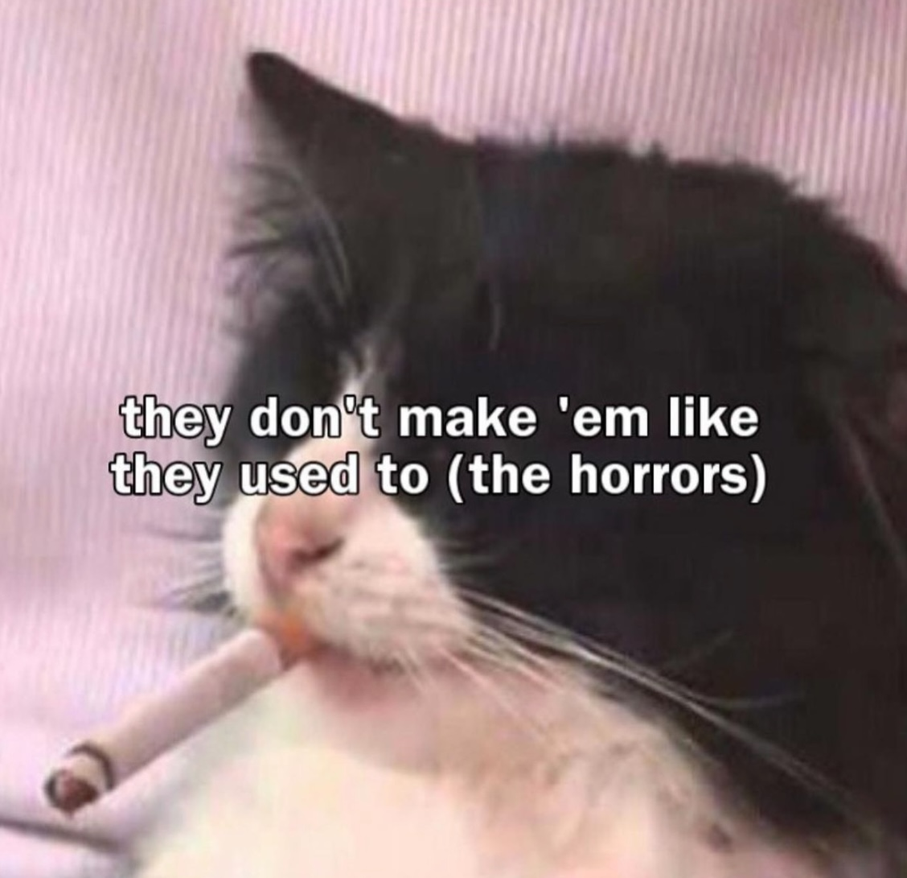